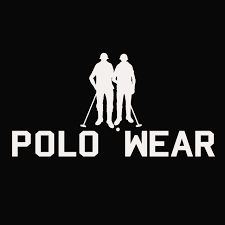

Professor Temporário de Química
Professor Temporário de QuímicaAtuei de professor de Química no cursinho-federal-goias
Cidade:Goiânia - GO
Telefone:(62) 9 8609-1611
e-Mail:rusvinpaixao@hotmail.com
Ser um desenvolvedor Pleno, mas antes, conseguir meu primeiro emprego :)
Ter uma boa família, mas antes, casar kkk
Graduação em Engenharia de Transportes
Instituto Federal de Goiás - IFG
Desenvolvedor Web
ProgramadorBR
 VendedorMaster
Fui vendedor por um período na Polo Wear Cerrado e consegui destaque rapidamente
Professor Temporário de Química
Atuei de professor de Química no cursinho-federal-goias